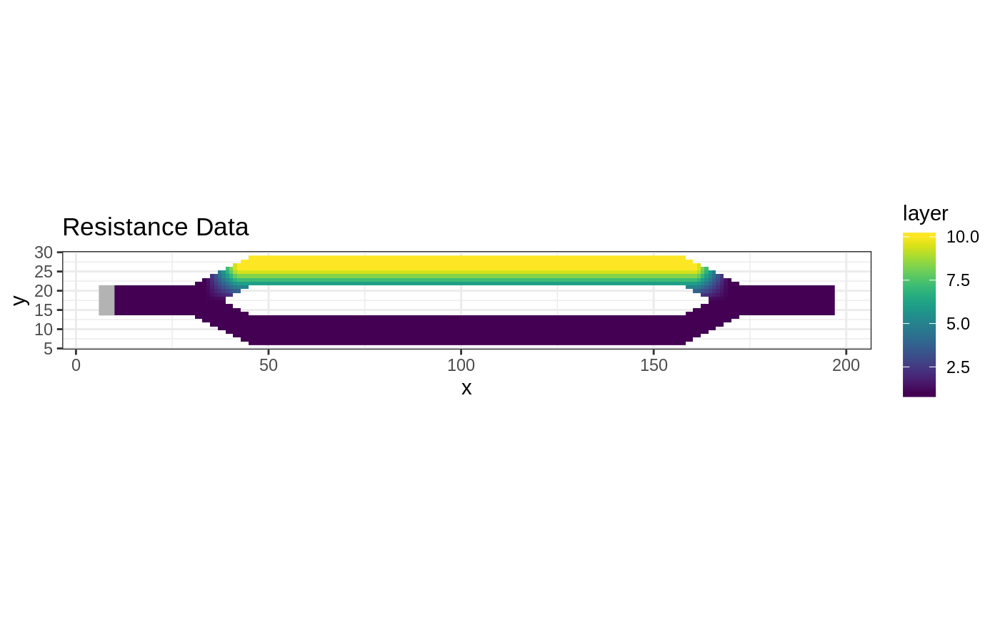
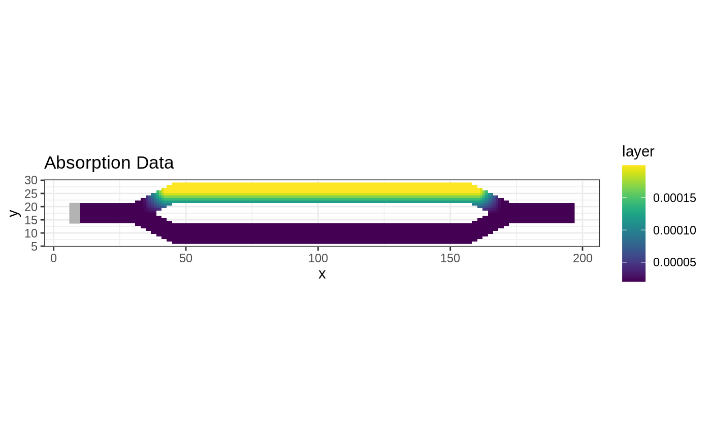
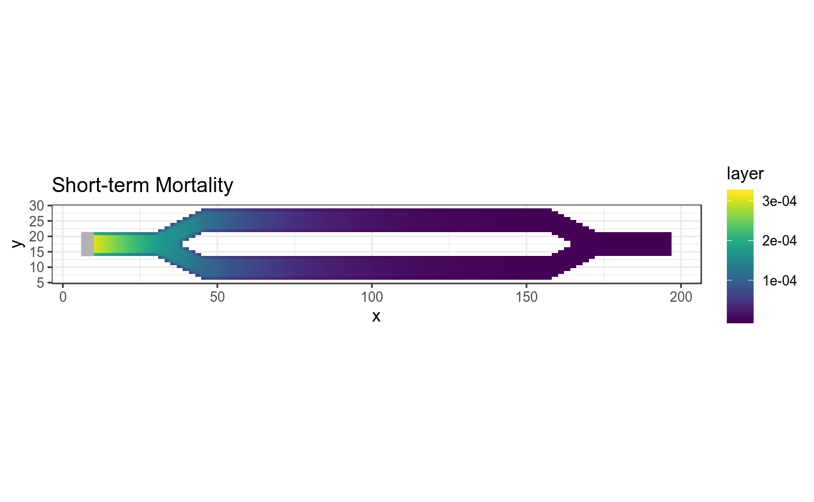
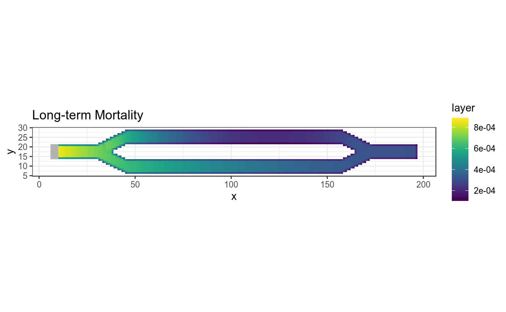

ggplot Visualization
Andrew Marx
2020-10-14
Source:vignettes/tutorial-ggplot.Rmd
tutorial-ggplot.RmdIntroduction
This tutorial shows how to plot samc analyses using ggplot2. It is based on the code in the basic tutorial.
Setup
# First step is to load the libraries. Not all of these libraries are stricly
# needed; some are used for convenience and visualization for this tutorial.
library("samc")
library("raster")
library("ggplot2")
library("viridis")
# "Load" the data. In this case we are using data built into the package.
# In practice, users will likely load raster data using the raster() function
# from the raster package.
res_data <- samc::ex_res_data
abs_data <- samc::ex_abs_data
occ_data <- samc::ex_occ_data
# Create a samc object using the resistance and absorption data. We use the
# recipricol of the arithmetic mean for calculating the transition matrix. Note,
# the input data here are matrices, not RasterLayers. If using RasterLayers, the
# `latlon` parameter must be set.
samc_obj <- samc(res_data, abs_data, tr_fun = function(x) 1/mean(x))
# Convert the occupancy data to probability of occurrence
occ_prob_data <- occ_data / sum(occ_data, na.rm = TRUE)
# Calculate short- and long-term mortality metrics and long-term dispersal
short_mort <- mortality(samc_obj, occ_prob_data, time = 4800)
long_mort <- mortality(samc_obj, occ_prob_data)
long_disp <- dispersal(samc_obj, occ_prob_data)
#> Performing setup. This can take several minutes... Complete.
#> Calculating matrix inverse diagonal...
Calculating matrix inverse diagonal... Complete
#> Performing final calculations. This may take a few minutes... Complete.
# Create rasters using the vector result data for plotting.
short_mort_map <- map(samc_obj, short_mort)
long_mort_map <- map(samc_obj, long_mort)
long_disp_map <- map(samc_obj, long_disp)Visualization With ggplot2
# Convert the landscape data RasterLayer objects to data frames for ggplot res_df <- as.data.frame(raster(res_data, xmn = 1, xmx = ncol(res_data), ymn = 1, ymx = nrow(res_data)), xy = TRUE, na.rm = TRUE) abs_df <- as.data.frame(raster(abs_data, xmn = 1, xmx = ncol(abs_data), ymn = 1, ymx = nrow(abs_data)), xy = TRUE, na.rm = TRUE) occ_df <- as.data.frame(raster(occ_data, xmn = 1, xmx = ncol(occ_data), ymn = 1, ymx = nrow(occ_data)), xy = TRUE, na.rm = TRUE) # When overlaying the patch raster, we don't want to plot cells with values of 0 occ_df <- occ_df[occ_df$layer != 0, ] # Plot the example resistance and mortality data using ggplot ggplot(res_df, aes(x = x, y = y)) + geom_raster(aes(fill = layer)) + scale_fill_viridis(begin = 0.0, end = 1, limits = c(min(res_df$layer), max(res_df$layer))) + geom_tile(data = occ_df, aes(x = x, y = y,fill = layer), fill = "grey70", color = "grey70") + ggtitle("Resistance Data") + coord_equal() + theme_bw() ggplot(abs_df, aes(x = x, y = y)) + geom_raster(aes(fill = layer)) + scale_fill_viridis(begin = 0.0, end = 1, limits = c(min(abs_df$layer), max(abs_df$layer))) + geom_tile(data = occ_df, aes(x = x, y = y, fill = layer), fill = "grey70", color = "grey70") + ggtitle("Absorption Data") + coord_equal() + theme_bw()

# Convert result RasterLayer objects to data frames for ggplot short_mort_df <- as.data.frame(short_mort_map, xy = TRUE, na.rm = TRUE) long_mort_df <- as.data.frame(long_mort_map, xy = TRUE, na.rm = TRUE) long_disp_df <- as.data.frame(long_disp_map, xy = TRUE, na.rm = TRUE) # Plot short-term mortality ggplot(short_mort_df, aes(x = x, y = y)) + geom_raster(aes(fill = layer)) + scale_fill_viridis(limits = c(min(short_mort_df$layer), max(short_mort_df$layer))) + geom_tile(data = occ_df, aes(x = x, y = y, fill = layer), fill = "grey70", color = "grey70") + ggtitle("Short-term Mortality") + coord_equal() + theme_bw() # Plot long-term mortality ggplot(long_mort_df, aes(x = x, y = y)) + geom_raster(aes(fill = layer)) + scale_fill_viridis(limits = c(min(long_mort_df$layer), max(long_mort_df$layer))) + geom_tile(data = occ_df, aes(x = x, y = y,fill = layer), fill = "grey70", color = "grey70") + ggtitle("Long-term Mortality") + coord_equal() + theme_bw() # Plot long-term dispersal ggplot(long_disp_df, aes(x = x, y = y)) + geom_raster(aes(fill = layer)) + scale_fill_viridis(limits = c(min(long_disp_df$layer), max(long_disp_df$layer))) + geom_tile(data = occ_df, aes(x = x, y = y, fill = layer), fill = "grey70", color = "grey70") + ggtitle("Long-term Dispersal") + coord_equal() + theme_bw()
